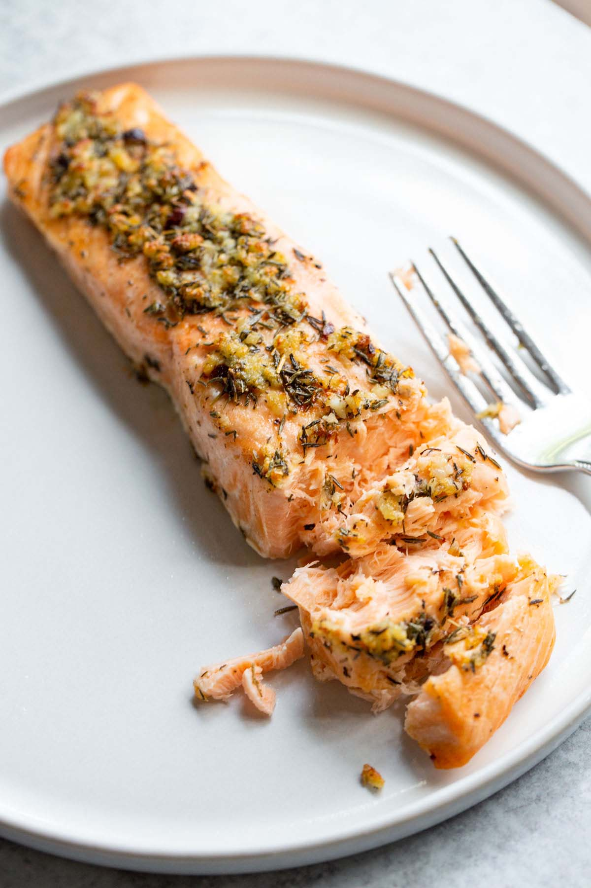

Recipe for Salmon

Decription
Air fried salmon is one of the quickest meals to make. It can be made in
less than 15 minutes, it makes the perfect dish for lunch or dinner.
This specific salmon recipe will be used with a garlic butter sauce, using
metled butter and minced garlic.
Ingredients
- Salmon fillet
- Butter
- Minced Garlic
- Parsley Flakes
- Red Pepper Flakes
- Salt
- Pepper
Steps
-
First, prepare the salmon filet by seasoning it with salt and pepper.
-
Melt butter and add minced garlic, parsley flakes, and red pepper
flakes. Stir together combined ingredients.
-
Use oil on the air fryer basket to prevent the salmon from sticking or
use parchment paper. Then place the salmon in the air fryer.
- Spoon the garlic butter sauce over the salmon.
- Air fry at at 390 for 6-8 minutes.
- Plate and eat once cooked to your desired temperature!